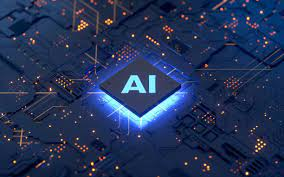

Current Artificial Intelligence
What we are capable of now:
The field of AI, now more than a half a century old, finally achieved some of its oldest goals.
It began to be used successfully throughout the technology industry, although somewhat behind the scenes.
Some of the success was due to increasing computer power and some was achieved by focusing on specific isolated problems and pursuing them with the highest standards of scientific accountability.
Still, the reputation of AI, in the business world at least, was less than pristine.
Inside the field there was little agreement on the reasons for AI's failure to fulfill the dream of human level intelligence that had captured the imagination of the world in the 1960s.
Together, all these factors helped to fragment AI into competing subfields focused on particular problems or approaches, sometimes even under new names that disguised the tarnished pedigree of "artificial intelligence".
AI was both more cautious and more successful than it had ever been.
Big Data
Big data refers to a collection of data that cannot be captured, managed, and processed by conventional software tools within a certain time frame.
It is a massive amount of decision-making, insight, and process optimization capabilities that require new processing models.
In the Big Data Era written by Victor Meyer Schonberg and Kenneth Cooke, big data means that instead of random analysis (sample survey), all data is used for analysis.
The 5V characteristics of big data (proposed by IBM): Volume, Velocity, Variety, Value, Veracity. The strategic significance of big data technology is not to master huge data information, but to specialize in these meaningful data.
In other words, if big data is likened to an industry, the key to realizing profitability in this industry is to increase the "process capability" of the data and realize the "value added" of the data through "processing".
Deep Learning
Deep learning is a branch of machine learning that models high level abstractions in data by using a deep graph with many processing layers.[210] According to the Universal approximation theorem, deep-ness isn't necessary for a neural network to be able to approximate arbitrary continuous functions. Even so, there are many problems that are common to shallow networks (such as overfitting) that deep networks help avoid.[211] As such, deep neural networks are able to realistically generate much more complex models as compared to their shallow counterparts.
However, deep learning has problems of its own. A common problem for recurrent neural networks is the vanishing gradient problem, which is where gradients passed between layers gradually shrink and literally disappear as they are rounded off to zero. There have been many methods developed to approach this problem, such as Long short-term memory units.
State-of-the-art deep neural network architectures can sometimes even rival human accuracy in fields like computer vision, specifically on things like the MNIST database, and traffic sign recognition.
Language processing engines powered by smart search engines can easily beat humans at answering general trivia questions (such as IBM Watson), and recent developments in deep learning have produced astounding results in competing with humans, in things like Go, and Doom (which, being a first-person shooter game, has sparked some controversy).

Artificial Intellgience
General intelligence is the ability to solve any problem, rather than finding a solution to a particular problem. Artificial general intelligence (or "AGI") is a program which can apply intelligence to a wide variety of problems, in much the same ways humans can.
Ben Goertzel and others argued in the early 2000s that AI research had largely given up on the field's original goal of creating artificial general intelligence. AGI research was founded as a separate sub-field and by 2010 there were academic conferences, laboratories and university courses dedicated to AGI research, as well as private consortiums and new companies.
Artificial general intelligence is also referred to as "strong AI",[220] "full AI",[221] or synthetic intelligence[222][223] as opposed to "weak AI" or "narrow AI". (Academic sources reserve "strong AI" to refer to machines capable of experiencing consciousness.

The future of AI.
What can we expect?
In 1968, Arthur C. Clarke and Stanley Kubrick had imagined that, by the year 2001, a machine would exist with an intelligence that matched or exceeded the capability of human beings. The character they created, HAL 9000, was based on a belief shared by many leading AI researchers that such a machine would exist by the year 2001.
In 2001, AI founder Marvin Minsky asked "So the question is why didn't we get HAL in 2001?"
Minsky believed that the answer is that the central problems, like commonsense reasoning, were being neglected, while most researchers pursued things like commercial applications of neural nets or genetic algorithms.
John McCarthy, on the other hand, still blamed the qualification problem.
For Ray Kurzweil, the issue is computer power and, using Moore's Law, he predicted that machines with human-level intelligence will appear by 2029.
Jeff Hawkins argued that neural net research ignores the essential properties of the human cortex, preferring simple models that have been successful at solving simple problems.
There were many other explanations and for each there was a corresponding research program underway.